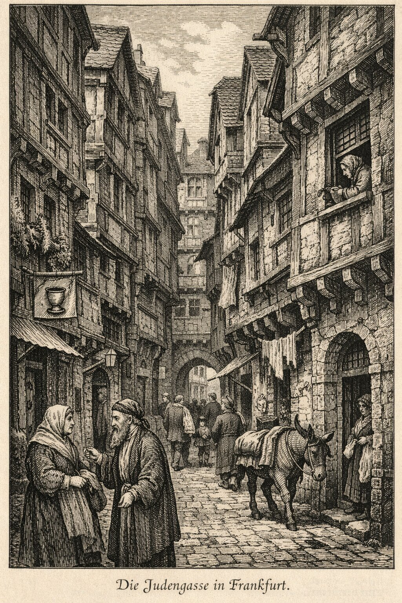
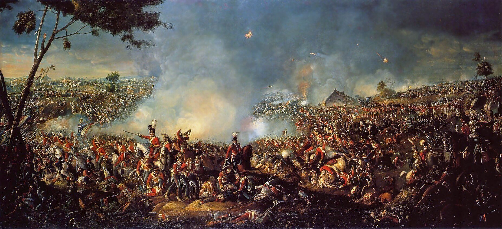
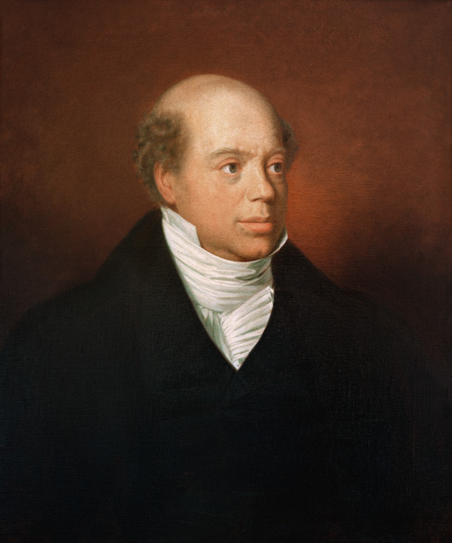
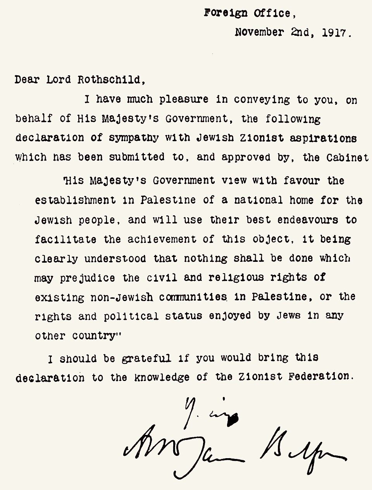

THE RED SHIELD
Frankfurt am Main, Germany · est. circa 1744
THE JUDENGASSE
Begin where it begins. Not with gold. With a wall. A German wall.
The Judengasse of Frankfurt am Main was established in 1462 by order of Emperor Frederick IIIFrederick III (1415–1493), Holy Roman Emperor. His decree forcing Jews into a segregated quarter was not unusual — similar ghettos existed across Europe — but the Frankfurt Judengasse became the most densely populated and lasted longer than most, surviving until Napoleonic-era reforms. — a single street in the heart of Germany, three hundred meters long and no wider than four yards at its broadest point, sealed at both ends by heavy gates that locked at nightfall, on Sundays, and on all Christian holy days. Into this fissure in the city's body the entire Jewish population of Frankfurt was compressed. By the eighteenth century, approximately three thousand souls lived in fewer than two hundred houses along that single lane.
The houses could not expand outward — the walls forbade it. So they grew upward, four and five stories into the dark, and backward, carved into ever more impossible subdivisions. Families of twelve in rooms meant for three. Rooftops almost touching overhead. The street at midday a corridor of permanent twilight.

The street at midday a corridor of permanent twilight
Into this lane, in 1744, Mayer Amschel was born. The house bore a red shield — rot schild — hung above the door. He was orphaned at twelve. Apprenticed to the banking firm of OppenheimerThe Oppenheimer banking house in Hannover was one of several Jewish financial firms operating under the patronage of German courts. Not related to the physicist. in Hannover. And somewhere in the mathematics of deprivation — in the compression of three thousand people into three hundred meters of German stone — something crystallized.
This is the first recursion. Power does not simply oppress. It shapes. The wall that forbids everything except money-handling creates, over three centuries, a population with an unmatched command of money. Then the wall's architects complain that the people behind it have become too good with money. The loop is perfect. The horror is structural.
The wall shaped a people. Now watch what they built when the wall came down.
CONCORDIA, INTEGRITAS, INDUSTRIA
Mayer Amschel had ten children who survived to adulthood. Five were sons. And he had a plan for each of them.
He sent Nathan — the boldest, the most aggressive — to London in 1798, the financial capital of the world's most powerful empire. James went to Paris in 1812, where Napoleon's wars were creating a firestorm of government debt. Salomon was dispatched to Vienna around 1820 to work alongside the Austrian statesman MetternichPrince Klemens von Metternich, the Austrian chancellor who dominated European diplomacy after Napoleon's defeat. He built the "Concert of Europe" — the conservative order the Rothschilds would finance for a century.. Carl traveled south to Naples to manage the finances of the Italian peninsula. Amschel, the eldest, stayed in Frankfurt to anchor the network at its point of origin.
Five sons. Five capitals. One family. The coat of arms Mayer Amschel secured bore five arrows clutched in a single fist, and the motto: Concordia, Integritas, Industria. Harmony. Integrity. Industry.

This was not a bank. It was a nervous system laid across the body of Europe — five nodes, connected by a private courier network faster than any government post on the continent. The Rothschild messengers, identifiable by distinctive blue leather pouches, moved intelligence across borders in days while official dispatches took weeks. In an era when information traveled at the speed of a horse, the family had something approaching a telegraph.
Before Mayer Amschel died in 1812, he codified the arrangement in his will: the business was to remain exclusively within the family. No daughters or sons-in-law in management. No public auditing. The family was to remain, forever, a closed system. Of his eighteen grandchildren, sixteen married first or second cousins. The bloodline was the firewall.
Each node connected by private couriers faster than any government on earth
Five houses. One nervous system. Faster than any government.
Now watch what happens when the fastest information network on earth
meets the biggest battle in European history.
WATERLOO
To understand what Nathan Rothschild did on June 20, 1815, you need to understand what the world looked like the day before.
Napoleon Bonaparte had escaped exile on the island of ElbaA small Mediterranean island off the coast of Tuscany. Napoleon was exiled there after his forced abdication in April 1814. He escaped after less than a year, landing in southern France with roughly 1,000 men and marching north in what became known as the "Hundred Days" — ending at Waterloo. in March and marched back into Paris without firing a shot. The French army, sent to stop him, defected to him instead — regiment by regiment, until the Bourbon king fled and Napoleon was once again Emperor of France. Europe was in panic. The British assembled a coalition army under the Duke of Wellington. The Prussians marshaled under Field Marshal BlücherGebhard Leberecht von Blücher (1742–1819). A 72-year-old Prussian commander whose late arrival at Waterloo proved decisive. His forces struck Napoleon's right flank in the late afternoon, turning a stalemate into a rout. Without Blücher, Wellington likely would have lost.. The fate of the continent — the political order of Europe for the next century — would be decided on a muddy field in Belgium.

"The nearest-run thing you ever saw in your life" — Wellington
The Battle of Waterloo was fought on June 18, 1815. It was a close-run thing — Wellington himself called it "the nearest-run thing you ever saw in your life." Napoleon's Imperial Guard broke against the British lines. Blücher's Prussians arrived on Napoleon's flank. By nightfall, the French army was destroyed.
That was the battle. Now attend to the information.

The man who knew before the British government
Nathan Mayer Rothschild, in London, received confirmed intelligence of Wellington's victory via the family's courier network on June 19 or early June 20 — a full day before the British government. The official dispatches did not reach the Cabinet until late on June 21.
The legend holds that Nathan appeared at the Stock Exchange and began selling. The market, observing the most well-informed man in London dumping giltsBritish government bonds — short for "gilt-edged securities." The backbone of the London financial system. Their price reflected confidence in the British state itself., concluded Wellington had lost. Panic cascaded. ConsolsConsolidated annuities — perpetual British government bonds that paid a fixed interest rate. The benchmark security of the 19th-century financial world. When consols crashed, it meant the market believed Britain was losing the war. collapsed. At the nadir, Nathan's agents reversed and bought — massively, at a fraction of the pre-panic price. When news of victory arrived, consols surged.
The evidence for this specific sequence is contested. FergusonNiall Ferguson, Scottish historian. His two-volume The House of Rothschild (1998, 1999) is the most comprehensive scholarly account, based on unprecedented access to the family's surviving archives. The Waterloo legend is examined in Volume I, Chapter 4. considers elements embellished by later antisemitic pamphleteers. What is documented: Nathan did have advance intelligence. Nathan did make an enormous fortune on Waterloo's aftermath. The question is one of degree.
But what happened after Waterloo is more important than what happened during it.
The Bond Machine
France was required to pay an indemnity of 700 million francsApproximately $140 million at the time — roughly $4 billion in today's money. The indemnity was imposed by the Treaty of Paris (1815). Managing this debt across multiple markets simultaneously was an unprecedented financial operation that established the template for modern sovereign bond issuance.. The Rothschild bank managed this — issuing bonds across multiple markets simultaneously. Unprecedented. From this moment forward, the family was not a bank. It was infrastructure. Between 1815 and 1914, the Rothschild houses issued government bonds for nearly every European state. They stood at the junction where sovereign desperation met private capital, and collected a toll for the passage.
The Suez Purchase
In November 1875, DisraeliBenjamin Disraeli, British Prime Minister (1874–1880). Himself of Jewish descent — baptized as a child. The irony of a converted Jew purchasing the Middle East's most strategic asset through a Jewish banking family was not lost on anyone at the time. needed £4 million overnight to buy the KhediveThe title of the ruler of Egypt under the Ottoman Empire. Isma'il Pasha had bankrupted Egypt through modernization projects and was desperate for cash — selling his 44% stake in the Suez Canal Company. of Egypt's Suez Canal shares. Parliament was not in session. He sent his secretary to Lionel de Rothschild. By morning, the money was advanced. A private family financed the British Empire's acquisition of the most strategically important waterway on Earth over dinner.
The Diamond Monopoly
N. M. Rothschild & Sons provided early financing for Cecil RhodesBritish mining magnate and politician (1853–1902). Founded the De Beers diamond monopoly and the colony of Rhodesia (now Zimbabwe). Architect of the Rhodes Scholarship. An avowed white supremacist who believed in Anglo-Saxon racial destiny. His legacy remains deeply contested.' De Beers Consolidated Mines. Rhodes' vision for southern Africa — the colonization of RhodesiaNamed after Cecil Rhodes himself. The territory (now Zimbabwe and Zambia) was colonized through Rhodes' British South Africa Company using a combination of deceptive treaties, military force, and forced labor. The Rhodesian state practiced white minority rule until 1980., the systematic dispossession of indigenous populations — was underwritten in part by Rothschild capital. The family did not pull the trigger. They financed the supply chain for the gun.
Remember this pattern. The junction. The toll booth. The position between two powers. It will repeat.
Suez. The chokepoint between Asia and Africa.
Financed by a Rothschild. Remember this geography. It matters later.
WHAT THEY BECAME IN OTHER PEOPLE'S MOUTHS
The Rothschilds' real and extraordinary power became the raw material for a mythology of hatred that would help murder six million people.
1840s pamphlets claiming the family controlled all governments. 1860s grand narratives of "Jewish world conspiracy." 1903, the forged Protocols of the Elders of ZionA fabricated antisemitic text, likely created by the Russian secret police (Okhrana), purporting to describe a Jewish plan for global domination. Debunked as a plagiarism of earlier French political satire. Despite being exposed as a forgery repeatedly, it was cited by Henry Ford, the Nazis, and continues to circulate today.. The name detached from its referent and became a cipher — a screen onto which centuries of resentment could be projected without engaging the actual mechanisms of power.
The ghetto produces the expertise. The expertise produces the power. The power produces the myth. The myth produces the pogrom. The pogrom drives survivors back toward the expertise. The walls around the Judengasse were demolished in 1811. The walls in the imagination were never demolished.
During the Holocaust, family members were arrested, properties seized. The propaganda film Die RothschildsDie Rothschilds: Aktien auf Waterloo (1940), directed by Erich Waschneck. Commissioned by Goebbels' propaganda ministry. Released the same month as Jud Süß — the two films formed a coordinated antisemitic campaign. The Rothschild name was used as shorthand for "Jewish conspiracy" while actual Rothschilds were fleeing for their lives. (1940), released the same year actual Rothschilds were being hunted, stripped, and caged.
The myth outlived the pogrom. It would outlive the camps. It would outlive the century.
But before all that — before the gas, before the ash, before the numbered arms —
one morning in November 1917, the myth received a letter.
DEAR LORD ROTHSCHILD
The sixty-seven words that would redraw the map of the Middle East were addressed to Lord Walter Rothschild, 2nd Baron Rothschild, as representative of the Zionist FederationThe English Zionist Federation, the British branch of the political movement founded by Theodor Herzl in 1897 advocating for a Jewish homeland. Walter Rothschild was its figurehead but Chaim Weizmann — a chemist and future first president of Israel — was the primary political force behind the Declaration..
Walter was a zoologist — famous for driving a carriage pulled by trained zebras through London, for amassing 2.25 million butterflies, 300,000 bird skins, 200,000 bird eggs. Deeply in debt. Reportedly blackmailed. A brilliant, eccentric, trapped man. But the name. The name was the point.

67 words · A letter from one man to another · Promising land that belonged to neither
Read the clause about "existing non-Jewish communities." Those four words described nine out of every ten people living in Palestine. They are defined by what they are not. They are an afterthought in a letter addressed to a Rothschild, and they are the reason there is a war happening right now.
Sixty-seven words. And the entire Middle East
pivoted on the name at the top. Now look at the map.
PALESTINE SITS AT THE CHOKEPOINT WHERE AFRICA MEETS ASIA
Palestine sits at the exact junction where Africa meets Asia, where the Mediterranean meets the Red Sea, where every trade route, pipeline, and cable connecting the Eastern hemisphere must pass through or past. The Suez Canal — financed by a Rothschild — runs through this junction. Every empire in recorded history has tried to control it. The question is not religious. It is infrastructural: who controls the junction?
What Happened Between the Letter and the Map
The British MandateThe League of Nations mandate (1920–1948) granting Britain administrative control over Palestine. Britain struggled to balance the Balfour Declaration's promise of a Jewish homeland with the rights of the Arab majority, ultimately handed the problem to the UN, and withdrew in May 1948. began. For thirty years, the British tried to govern a promise they could not keep — a homeland for one people on the land of another. Jewish immigration accelerated. Arab revolts were crushed. Britain held the door open and the lid down at the same time.
Then came the thing that broke the world's capacity for argument.
Six million murdered. Not in battle. In process. Cattle cars to camps with flower gardens at the entrance. Ledgers recording the weight of extracted gold fillings. Suitcases stacked in warehouses, each one packed by someone who believed they were being resettled. Children separated from mothers by a gesture — left or right — from a man in white gloves. The industrialization of annihilation. The Holocaust did not happen in darkness. It happened in the light of German engineering, IBM punch cards, and Swiss bank vaults that asked no questions.
Among the dead: Rothschilds. The family whose name had been made into a symbol of omnipotence could not save its own members from the machinery. The myth said they controlled the world. The world gassed them anyway.
After the camps, after the photographs of stacked bodies forced the world to look at what it had permitted — the argument for a Jewish state became unanswerable. Not because it was right. Because the alternative had been Auschwitz. The survivors needed somewhere to go. The world that had turned them away — the ships sent back, the quotas enforced, the borders closed — now owed a debt it could only pay with someone else's land.
1948. The State of Israel declared. Within hours, five Arab armies invaded. Israel survived. 750,000 Palestinians did not survive in place — they fled or were expelled from villages that would be bulldozed and renamed. The NakbaArabic for "catastrophe." The mass displacement of Palestinians during the 1948 war. Between 700,000 and 750,000 people fled or were expelled from their homes. Most were never allowed to return. Their descendants — now numbering over 5 million — remain registered as refugees with UNRWA.. The catastrophe. One people's liberation became another people's dispossession — not in sequence but simultaneously, in the same act, on the same land.
1967. The Six-Day WarIn June 1967, Israel launched a preemptive strike against Egypt, Syria, and Jordan. In six days, it captured the Sinai Peninsula, Gaza Strip, West Bank (including East Jerusalem), and Golan Heights — tripling the territory under its control. The occupation of the West Bank and Gaza continues in various forms to this day.. Israel tripled its territory in less than a week — the West Bank, Gaza, the Golan Heights, the Sinai. UN Resolution 242Adopted unanimously by the UN Security Council in November 1967. Called for withdrawal of Israeli forces from territories occupied in the conflict and acknowledgment of the sovereignty of every state in the area. The resolution's deliberate ambiguity — "territories" vs. "the territories" — has been debated for decades. called for withdrawal. The withdrawal did not come. The settlements began instead — small at first, then relentless, hilltop by hilltop, road by road, until the map of the West Bank looked like shattered glass.
By 1982, this was not history. It was geography. And into this geography stepped a man with an essay and a plan.
THE MAP THAT KEEPS BEING REDRAWN
In 1982, Oded Yinon — a former Israeli Foreign Ministry official — published an essay in Kivunim"Directions" — a journal published by the World Zionist Organization. Yinon's essay, "A Strategy for Israel in the Nineteen Eighties," was largely ignored at the time of publication. It was translated into English by Israel Shahak and later gained prominence in conspiracy circles as an alleged "master plan." arguing that Israel's strategic interest lay in the fragmentation of surrounding Arab states along ethnic and sectarian lines. Iraq should be divided into Sunni, Shia, and Kurdish territories. Syria should splinter. Egypt was vulnerable along its Coptic-Muslim fault line.
Meanwhile, the Israeli government shifted steadily rightward. The LikudIsrael's dominant right-wing party, founded in 1973 by Menachem Begin and Ariel Sharon among others. Its 1977 election victory ended three decades of Labor dominance. The party's ideological roots trace to Revisionist Zionism, which rejected territorial compromise and claimed sovereignty over all of historic Palestine and Transjordan. party's 1977 platform referenced the whole Land of Israel. Netanyahu's coalition governments from 2009 onward included ultranationalists openly advocating annexation. Finance Minister SmotrichBezalel Smotrich, leader of the Religious Zionist Party and Israel's Finance Minister since 2022. Has described himself as a "fascist homophobe." In March 2023, he displayed a map at a Paris conference showing Jordan as part of Israel. He advocates full Israeli sovereignty over the West Bank. posted a map of "Greater Israel" including Jordan. National Security Minister Ben GvirItamar Ben Gvir, leader of the far-right Otzma Yehudit ("Jewish Power") party. Convicted in 2007 of supporting the Kach movement, designated a terrorist organization by both Israel and the United States. As National Security Minister, he has visited the Temple Mount / Haram al-Sharif in provocative displays of sovereignty. has been convicted of supporting a terrorist organization.
Meanwhile: Iraq was invaded and splintered. Syria collapsed. Libya fractured. The map Yinon sketched — fragmented Arab states surrounding an expanding Israel — looks more like the present Middle East with each passing year.
Coincidence? Or blueprint? Hold that question. Let me show you more.
The facts are accumulating. You can feel the thread forming.
Let it form. We'll examine it together — in a moment.
EVIDENCE RECOVERED FROM MULTIPLE SOURCES
What follows is a series of documented facts, presented in the form they would take if you found them in an intelligence dossier. Each one is individually verifiable. Pay attention to what your mind does with the space between them.
WHAT JUST HAPPENED TO YOU
You felt it. The thread tightening. The pattern forming. The sense that something was being revealed.
Every fact in that file is real. The AIPAC spending is public. Epstein's connections are court documents. The cameras did fail. The guards did sleep. Robert Maxwell's funeral was attended by intelligence chiefs. These are not inventions.
What is invented is the thread. The single gleaming line from a German ghetto to falling bombs. What is invented is the agent — the hidden hand, the puppeteer behind the puppeteers. What is invented is the idea that this required coordination rather than the far more terrifying possibility: that it is all structure. That no one is driving. That the machine runs itself.
I arranged those facts in sequence — I, the writer of this document — because I understand how your pattern-recognition engine works. I did not lie to you. I curated you into a feeling that felt like discovery.
You are holding a device designed to interrupt you. While you've been reading, notifications have accumulated. The feed has refreshed. An algorithm has noticed you've been gone too long and is preparing the lure to bring you back.
You stayed anyway.
You stayed because I told you a story that felt like it was revealing something. That dark thrill of hidden knowledge is the most addictive information-commodity on earth. And I need you to understand: that feeling is the weapon.
There is a war being fought right now that is not the war in the Middle East and not the war in Iran. It is the war for your attention. The flood of information — the scroll, the refresh, the alert, the algorithmic recommendation — is not noise. It is a shaping operation. It shapes what you believe is happening. It shapes what you think you can do about it. It shapes who you trust and who you hate and what you believe is possible.
Your attention is sacred ground. It is the only territory you actually control — the small, irreducible space between what reaches your eyes and what you choose to do with it. Every force on earth — every government, every corporation, every algorithm, every propagandist — is fighting to occupy that ground. Most of them are winning. You have been scrolling through a battlefield and mistaking it for a feed.
Every conspiracy theory is a product of this flood. Not a challenge to it — a product. The conspiracy emerges when information exceeds the mind's capacity to structure it, and the mind — starving for coherence — grabs the nearest thread and pulls. The thread feels like resistance. It feels like waking up. It feels like fighting the machine.
It is the machine. The conspiracy is the flood wearing a mask. The attention economy's most perfect product: content so engaging that the person consuming it believes they are escaping the system while feeding it. The machine measures one thing: did you stay?
I kept you. I am showing you the inside of the machine by operating it on you. The Word against the Flood — and the Flood is not the water. The Flood is the shaping.
LOOK BACK AT WHAT YOU JUST TRAVELED
You have now read the full narrative — from the Judengasse to the present. Here it is compressed. Notice how the compression itself creates the feeling of inevitability. That feeling is the conspiracy. The arc is real. The inevitability is manufactured.
THE VISIBLE
Children are dead in Gaza. Their names are known. Their ages are known.
Bombs are falling on Iran. The authorization was signed by a human being. The weapons were manufactured in American factories, loaded onto American aircraft, and delivered by American pilots. Each of these is a person who made a choice.
And the conspiracy — every conspiracy — functions as a buffer between you and these facts. If the Rothschilds did it, the deaths become plot points. If Netanyahu is a puppet, his choices become inevitable — and the word for inevitable is not his fault. The conspiracy that seems to condemn the powerful actually absolves them.
What is happening is not hidden. The arms deals are on record. The UN votes are on record. The vetoes are on record. The AIPAC checks are on record. You do not need a thread from the Judengasse to understand that governments are choosing violence and other governments are choosing to supply it.
You need only to look at what is in front of you and refuse to look away.
The wall produces the expertise. The expertise produces the power. The power produces the myth. The myth produces the pogrom. The pogrom produces the state. The state produces the occupation. The occupation produces the resistance. The resistance is called terrorism. The terrorism justifies the wall. New wall. Same recursion.
The violence produces the narrative. The narrative produces more violence. Somewhere underneath, actual human beings — Jewish, Palestinian, Iranian, American — none of whom chose to be born into this machinery — are dying.
and the sedative prevents you from acting,
and the inaction permits the violence to continue —
then who does the conspiracy serve?
It serves the violence itself.
Every hour tracing threads
is an hour not spent opposing a war.
Every name whispered in the dark —
Rothschild, Epstein, Illuminati, cabal —
is a name you did not speak in the light:
the name of a child who is dead.
What You Can Actually Do
Contact your representatives. Not with conspiracy theories — with the public record. The arms deals. The vote tallies. The funding sources. AIPAC's spending is public. Your representative's votes are public. Call them. Name the specific votes. The machine depends on your silence, not your ignorance.
Protect your attention. The conspiracy is a sedative; the feed is a shaping operation. Every hour you spend scrolling through algorithmic outrage is an hour you did not spend in your community, with your family, in the physical world where change actually happens. Guard the space between your eyes and your actions like the sacred ground it is.
Refuse the thread. Follow the receipts. When someone offers you a grand narrative connecting everything, ask: who signed the order? Who cast the vote? Who wrote the check? These are public records. Follow the visible decisions of visible people. That is where power actually operates — not in the shadows, but in the fluorescent light of a congressional office.
Talk to someone who disagrees with you. Not online. In person. The machine profits from your division. Every conversation across a divide is an act of resistance against an architecture designed to prevent exactly that.
Walk outside at sunrise. I am not being poetic. I mean it literally. The world is not the feed. The world is the light hitting the grass. Your daughter's hand in yours. The neighbor you haven't spoken to. The thing that is real is not on your screen. Step out of the spiral. The spiral does not resolve. But you can.
CONSPIRACY NARRATIVES CONSTRUCTED TO DEMONSTRATE THEIR OWN MACHINERY
HISTORICAL SOURCES: FERGUSON (1998, 1999) · ELON (2002) · LOTTMAN (1995)
SPECULATIVE ELEMENTS MARKED IN CHAPTER HEADERS
NO CONSPIRACY THEORY HAS EVER STOPPED A WAR
NO HIDDEN THREAD HAS EVER FED A CHILD
NO MASTER PLAN HAS EVER BEEN MORE DANGEROUS
THAN THE VISIBLE DECISIONS OF VISIBLE PEOPLE
THE SPIRAL ENDS WHERE YOU DECIDE TO ACT